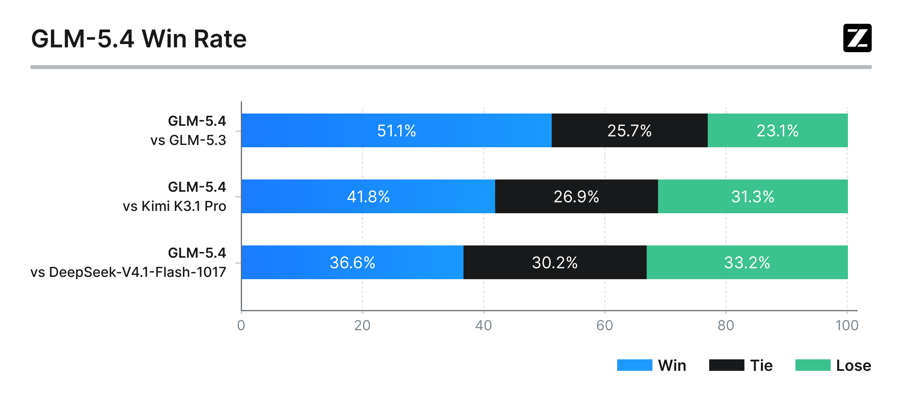

## Documentation Index
Fetch the complete documentation index at: https://docs.z.ai/llms.txt
Use this file to discover all available pages before exploring further.
GLM-5.4
Overview
GLM-5.4 is Z.ai's latest flagship model and the first built on the Loop Transformer architecture, reaching intelligence levels comparable to 2T-3T parameter models. It marks the start of Generalized Coding, where code becomes the foundation for solving a much wider range of tasks and unlocking new capabilities:
Loop Transformer Architecture
GLM-5.4 introduces a Loop Transformer architecture that reuses 28 layers of the GLM-5 base model across two iterations, enabling deeper reasoning without increasing parameter count. Combined with optimized KV caching and sparse attention, it delivers stronger reasoning performance while keeping deployment costs under control, particularly at 1M context lengths.
Generalized Coding
Driven by improvements in both coding and vision, GLM-5.4 generalizes well beyond traditional software development. It can write code to generate and edit videos, build complete games, and handle 3D modeling and mechanical design.
[card] Input Modality
Video / Image / Text / File
[card] Output Modality
Text
[card] Context Length
1M
[card] Maximum Output Tokens
128K
How to Use
GLM Coding Plan
GLM-5.4 is now available to all GLM Coding Plan users and can be accessed through your preferred coding tools. For users on weekly quota plans, the available quota for GLM-5.4 is increased to 1.5× that of GLM-5.3.
Subscribe Now: Personal Plan, Team Plan.
Capability Support
- Thinking Mode：Supports thinking mode for deeper reasoning; with the Loop Transformer, the model reasons more deeply without adding parameters, and part of the reasoning shifts from explicit output tokens into the implicit depth of the loop
- Streaming Messages：Supports real-time streaming responses for an enhanced user interaction experience, with up to 200 tokens/s during off-peak hours and 70–80 tokens/s at peak load
- Function Calling：Provides powerful tool-calling capabilities and supports integration with a wide range of external tools
- Context Caching：Uses an intelligent caching mechanism to optimize performance in long-context conversations
- Structured Output：Supports structured output formats such as JSON for seamless system integration
Key Advancements
Over the past three months, we have aggressively scaled both loop depth and model size in parallel. The first surprise came from the Loop Transformer architecture itself. By executing a shared block of layers across multiple iterations, the model can reason more deeply without adding parameters, effectively matching the performance of much larger models.
GLM-5.4 is our first flagship model built on the Loop Transformer architecture, reaching intelligence levels comparable to 2T-3T parameter models.
GLM-5.4 marks the start of Generalized Coding, where code becomes the foundation for solving a much wider range of tasks and unlocking new capabilities.
The model still has some limitations. Most notably, it tends to get caught in overly long "marathon thinking" loops, though this prolonged reflection and self-correction does consistently improve accuracy beyond its parameter count.

The Loop Architecture

As we noted in our GLM-5.3 technical blog, memory-intensive tasks benefit from more parameters, while reasoning-intensive tasks benefit from more effective compute. Large-scale software engineering, cybersecurity, 3D modeling, and physical control are all ultra-long-chain reasoning tasks. The model must follow multi-step causal chains while maintaining global logical consistency. Stacking parameters and memorizing data cannot solve this.
From Pre-Trained Base to Loop Transformer
In a standard Transformer, each layer runs once per forward pass. In a Loop Transformer, a group of weight-shared layers runs for multiple iterations, refining the hidden states from the previous pass. This gives us a deeper network without increasing the parameter count.
The idea is not new. The 2018 Universal Transformer proposed weight-shared depth, and recent work on recurrent depth and looped language models has shown gains at small scales. However, while weight sharing improves parameter efficiency, looped models trained from scratch still lag behind unshared models under the same pre-training compute budget. Instead of pre-training from scratch, we adapted an already pre-trained base model into a Loop Transformer through continued training. This lets us raise the intelligence ceiling with a relatively small compute overhead.
Architectural Modifications at 750B Scale
GLM-5.4 loops 28 layers of the GLM-5 base model for two iterations. To balance performance gains with deployment costs at the 750B scale, we made three changes after extensive experimentation:
Gated Progressive Updates
When converting middle layers of an existing model into a multi-pass loop, directly overwriting hidden states causes activation norms to blow up across iterations. Downstream layers then receive representations outside their expected scale and distribution.
GLM-5.4 adds independent per-token gates for each iteration to proportionally write candidate updates back into the residual stream. After training, these gates develop a clear division of labor. The first pass builds global context and writes conservatively with small gate values to keep scales stable. The second pass reuses this state to refine the output, opening the gates to write full updates. The gates also adjust step size dynamically based on token difficulty: on harder tokens, the first pass writes more aggressively so complex predictions benefit more from iterative refinement.
Hybrid KV Cache (Global Sharing + Independent Sliding Window)
A naive implementation keeps a full KV cache for every loop iteration, multiplying memory usage with the loop count. Instead, we build on cross-loop KV sharing by supplementing it with a local sliding window for the new pass: the second loop reuses the sparse KV selected in the first pass, while retaining its own newly generated KV within the sliding window. These two KV streams can overlap at the same positions, allowing the model to attend to both the first-pass context representations and the updated local representations from the second pass.
As a result, an extra loop only costs one sliding window of KV cache rather than a full context cache. At 1M context lengths, this keeps GLM-5.4's deployment cost increase over GLM-5.3 well under control.
Sparse Attention Index Reuse
GLM-5.4's base model uses sparse attention. The second loop directly reuses the attention indices generated by the first loop's indexer, adding zero indexing overhead. Our experiments show this performs nearly identically to recomputing indices on every pass.
Scaling Correctness & Controlled Iso-Parameter Ablations
Looping is also a strict test of Scaling Correctness: any architectural change must still work at scale. Before committing our flagship model to it, we validated the Loop architecture progressively across 1B, 4B, 30B, and 750B base models.
On a 30B model with the exact same architecture as our 750B base, we ran a controlled iso-parameter comparison. With identical parameter counts and only \~10% more total training compute, the looped version showed clear gains:

(Evaluated on the 30B model after 200K long-context SFT, with thinking mode enabled.)
Two findings stand out:
- Longer reasoning chains benefit more. The largest gains show up in math, scientific reasoning, and long-context tasks, which are core to Generalized Coding.
- Fewer tokens spent on thinking. Across most benchmarks like GPQA-Diamond and MMLU-Pro, average output length drops by 10–14%, mostly from shorter chains of thought. In effect, part of the reasoning shifts from explicit output tokens into the implicit depth of the loop.
Inference Efficiency
GLM-5.4 reaches up to 200 tokens/s during off-peak hours and maintains 70–80 tokens/s at peak load. Achieving this throughput with a multi-pass Loop architecture required close co-design between the model and our inference infrastructure. Alongside the memory and retrieval savings from our KV cache and sparse index designs, we fused core kernels at the systems level to cut down intermediate memory reads and writes, eliminating the fragmented overhead amplified by looping.
Generalized Coding
Coding has become the foundation for extending model capabilities. Since going all-in on coding in early 2025, we have unlocked Agentic Engineering, Long-Horizon Tasks, and Cybersecurity. Now we are pushing toward Generalized Coding. It has a higher ceiling and broader impact, and GLM-5.4 is just the starting point.
Driven by improvements in both coding and vision, GLM-5.4 generalizes well beyond traditional software development. It can write code to generate and edit videos, build complete games, and handle 3D modeling and mechanical design:
Scaling Coding to Video: Producing "Hello World," GLM-5.4's self-narrated music video.
<video src="https://cdn.bigmodel.cn/static/platform/videos/glm-5.4/1.mp4" controls />
Scaling Coding to Engineering: Building a 6-axis robotic arm through engineering-grade CAD modeling in FreeCAD.
<video src="https://cdn.bigmodel.cn/static/platform/videos/glm-5.4/3.mp4" controls />
Scaling Coding to 3D: Generating an interactive 3D macro bird-watching experience from scratch using pure mathematical geometry and custom GLSL shaders.
<video src="https://cdn.bigmodel.cn/static/platform/videos/glm-5.4/2.mp4" controls />
Looking Ahead
GLM-5.4 is our first step with looped architectures, and several questions remain open. We are exploring how to achieve adaptive compute so harder tokens dynamically get more iterations, and how the returns of looping behave as both loop count and model size keep growing.
We are not choosing between scaling depth and scaling model size; we are pursuing both. GLM-5.4 validates computational depth, and our next, significantly larger model will carry forward everything we learned here. It will be ready soon.
This documentation is built and hosted on Mintlify, a developer documentation platform.